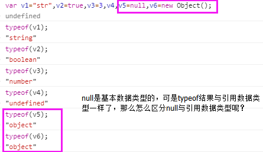

变量、作用域、内存问题
- 基本类型有：string、number、boolean、undefined、null
- 引用类型：Object、Array、Function、Date、RegExp
- 如何判断是基本类型还是引用类型？

使用instanceof区分null和引用类型。

如何知道是哪种引用类型？

- 二者在复制变量值上的区别
基本数据类型复制变量值时，新旧变量独立；引用类型复制变量值时，新旧变量实际上引用同一个对象。


- 执行环境Execution Context（EC）
也称为执行上下文。执行环境是一个概念，一种机制，用来完成JavaScript运行时在作用域、生存期等方面的处理，它定义了变量或函数是否有权访问其他数据，决定各自行为。所有的JavaScript代码都是在一个执行环境中被执行的。
- 全局执行环境
在一个页面中，第一次载入JS代码时创建一个全局执行环境，全局执行环境是最外围的执行环境，在Web浏览器中，全局执行环境被认为是window对象。因此，所有的全局变量和函数都是作为window对象的属性和方法创建的。
- 函数执行环境
当调用一个 JavaScript 函数时，该函数就会进入与该函数相对应的执行环境。如果又调用了另外一个函数（或者递归地调用同一个函数），则又会创建一个新的执行环境，并且在函数调用期间执行过程都处于该环境中。当调用的函数返回后，执行过程会返回原始执行环境。因而，运行中的 JavaScript 代码就构成了一个执行环境栈。
function Fn1(){
function Fn2(){alert(document.body.tagName);//BODY//other code...}
Fn2();
}
Fn1();

变量对象（Variable Object）：程序在进入每个执行环境的时候，JavaScript引擎在内部创建一个对象，叫变量对象。变量对象上的属性对应该环境中的所有变量，在函数中访问参数或局部变量时，就是在VO上搜索相应的属性，返回其值。
- 作用域/作用域链
当代码在一个环境中执行时，都会创建变量对象的一个作用域链。作用域链的用途是：保证对执行环境有权访问的所有变量和函数的有序访问。作用域链的前端，始终都是当前执行的代码所在环境的变量对象。如果这个环境是函数（Fn2），则将其活动对象作为变量对象，活动对象在最开始时只包含一个变量，及arguments对象，作用域链中的下一个变量对象来时包含环境（Fn1），而再下一个变量对象来自下一个包含环境。全局执行环境的变量对象是作用域链中的最后一个对象。

在Fn2函数中进行变量访问时，首先会在Fn2 Variable object访问内进行寻找，如果没有找到，则向上，搜索Fn1 Variable Object中是否存在，直到找到，停止搜索。

弹出undefined，是因为rain中有变量x，则不会再向上查找x，但在第一个alert时，x还没有赋值，所以是undefined，上述代码等价于：

- 延长作用域链